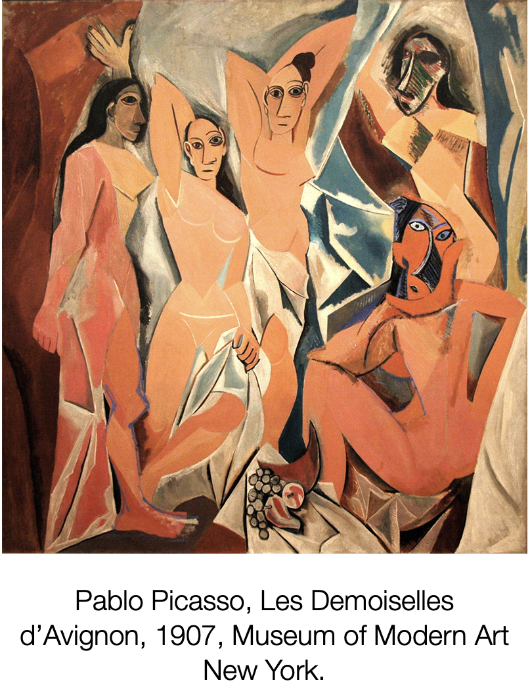
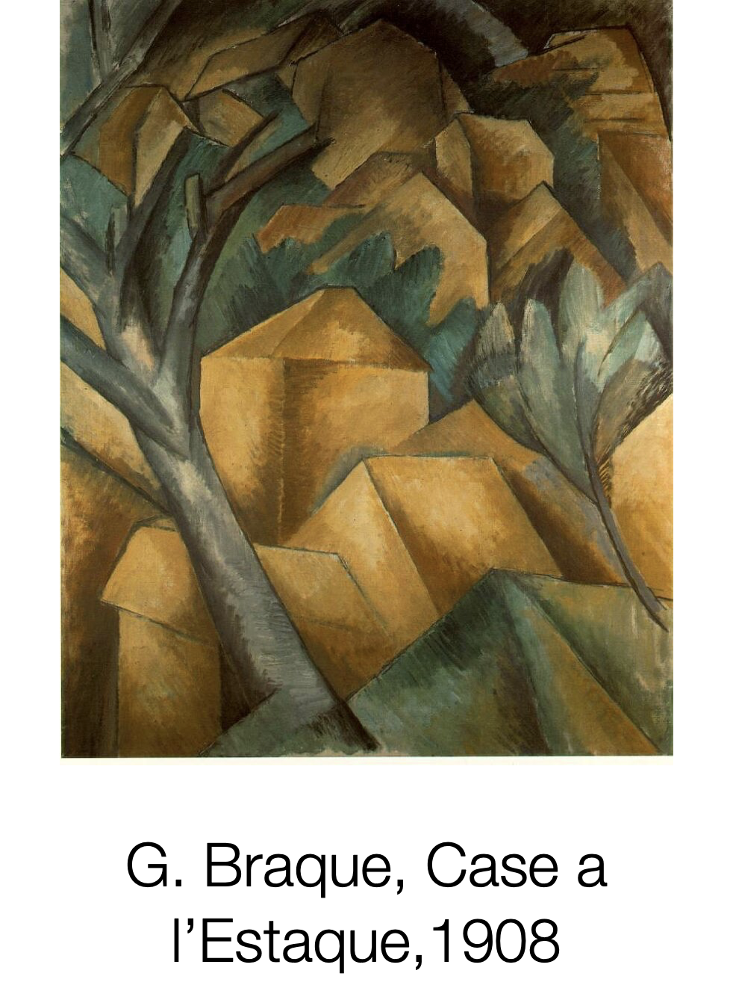
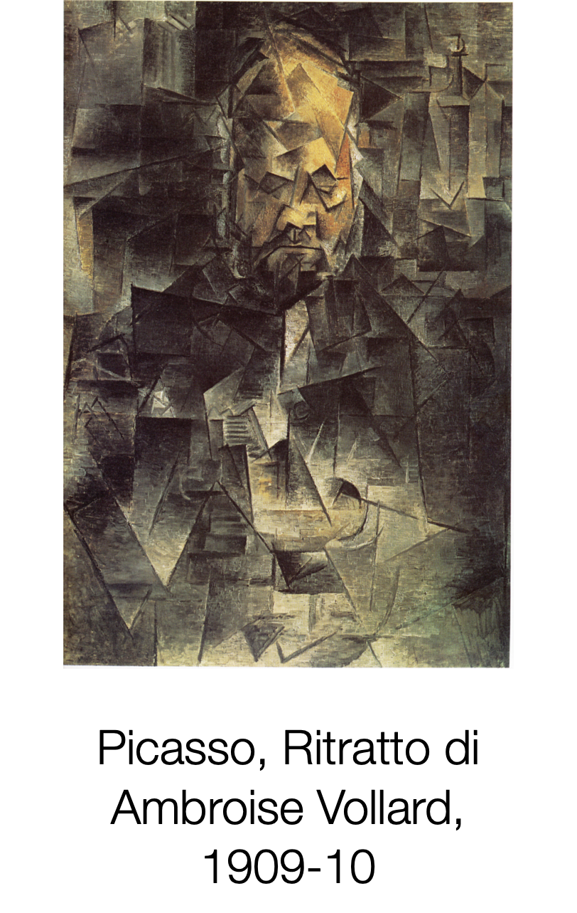

Il cubismo
Il cubismo nasce ufficialmente con il dipinto di Picasso “Les demoiselles d’Avignon” del 1907. Il termine deriva dal giudizio del critico Vauxelles che ritenne «bizzarrie cubiste» le figure rappresentate. I due principali esponenti di questo movimento sono Pablo Picasso (1881-1973) e Georges Braque (1882-1963). Come per tutti i movimenti di avanguardia c’è la convinzione che l’arte non debba più imitare la realtà. Per i cubisti una cosa nn può essere insieme vera e verosimile, infatti si concentrano sul conoscere l’oggetto da raffigurare piuttosto che sul copiarlo. Si rappresenta l’oggetto nella sua totalità, anche nelle parti nascoste e da piu punti di vista: ognuno di questi corrisponde ad un diverso momento dell’osservazione. Viene quindi introdotta la quarta dimensione: il tempo, necessario per acquisire la conoscenza degli oggetti. Per i cubisti il tempo è condizionato dalle emozioni e dalla memoria personale.
Protocubismo o Primitivo (1907-1909)
La prima fase del cubismo vede come soggetti prevalentemente paesaggi e nature morte, ridotti a solidi geometrici. Si predilige l’uso di pochi colori e forti contrasti fra essi. Si ispira all’arte primitiva Prevale la bidimensionalità: solo le ombre innaturali creano volume.
Cubismo analitico (1909-1911)
Si tende alla monocromia: i colori sono scuri, metallici (toni grigi, bruni, ocra). E’ eliminata la linea di contorno, i volumi si intersecano. Il quadro è scomposto in piccoli frammenti geometrici, ognuno dei quali rappresenta il soggetto visto da più punti di vista ( frontale, laterale, di profilo, dietro, dall’alto, dal basso): ogni punto di vista corrisponde ad un momento diverso dell’osservazione...il tempo.
Cubismo sintetico (1911-1914)
Braque e Picasso non volevano che la loro pittura sconfinasse nell'astrazione, senza un rapporto concreto con la realtà. Per risolvere, nei dipinti si introducono oggetti reali: lettere dell’alfabeto, materiali, giornali. In questo modo ogni ipotesi di fuga verso la l’astrazione viene volontariamente bloccata dall’ immediata riconoscibilità di questi elementi perché riconducibili alla concretezza del quotidiano. Quindi scomposizione con aggiunta, sinteticamente, di frammenti veri combinati alle parti dipinte. Nasce il collage o papier collé. I soggetti sono prevalentemente nature morte. Torna il colore

Cubismo orfico (1912-1914)
Nel 1912 un gruppo di cubisti formò il movimento detto Section d'Or con una mostra alla Galerie Élysées La Boétie a Parigi, accompagnata dalla pubblicazione del trattato Du Cubisme di Metzinger. Guillaume Apollinaire pubblica il manifesto programmatico del movimento e conia il termine “orfismo” (che fa riferimento mitico ad Orfeo, musicista e poeta), facente capo a Robert Delaunay. Gli orfisti criticano la staticità e la mancanza del colore. Introducono il movimento, andamento rotatorio molto vicina alla definizione di spazio-tempo del Futurismo italiano. Il gruppo si incontrava regolarmente in casa dei fratelli Duchamp (Jaques Villon, Marcel Duchamp, Raymond Duchamp Villon Puteaux) e la denominazione Section d’Or fu data da Villon alla prima mostra del gruppo (chiarisce l'intento del movimento. Sostenere l’aspetto analitico del cubismo sulla base di regole matematiche e geometriche, tratte dalle speculazioni rinascimentali di L. Pacioli sulla sezione aurea o “numero d'oro”. Robert Delaunay realizza un intero ciclo di dipinti e disegni (una cinquantina in totale) negli anni 1909/12. Si inizia, come i cubisti dalla scomposizione dell'oggetto reale analizzato nei vari suoi aspetti e da vari piani prospettici, successivamente si inserisce il dinamismo spaziale, movimento torsivo di impronta Futurista (ricorda Boccioni). Sono presenti moli colori (policromismo). Mentre il Cubismo è un'analitica enumerazione di successive percezioni dell’oggetto, senza nessuna sensibilità per il colore, l'orfismo recupera il concetto di simultaneità, e fa del colore e della luce un attributo essenziale alla ricomposizione della sensazione.
Clicca l'immagine